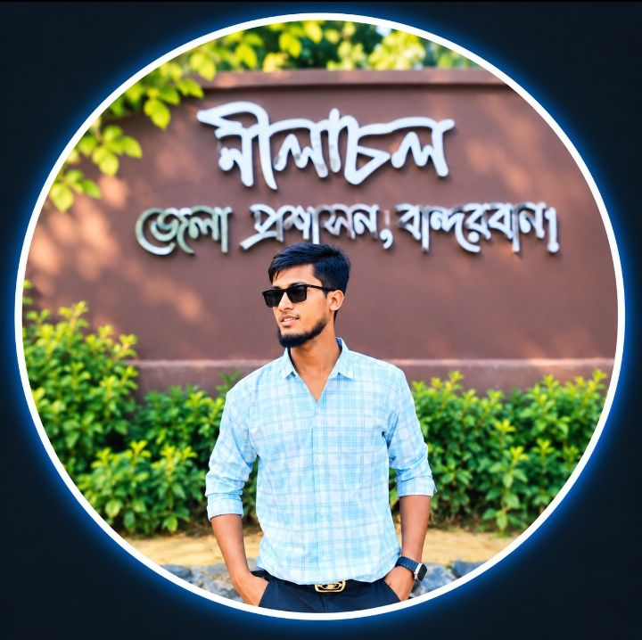
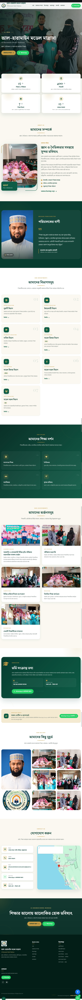
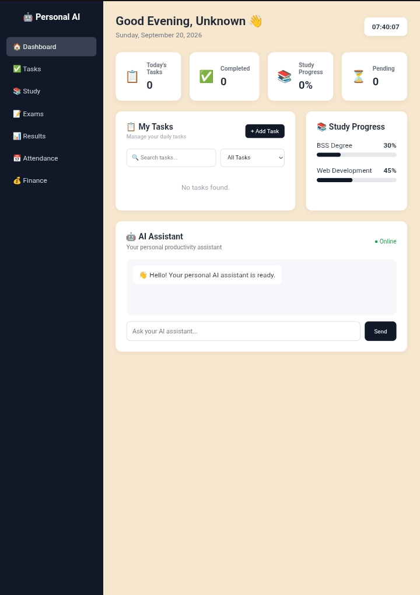
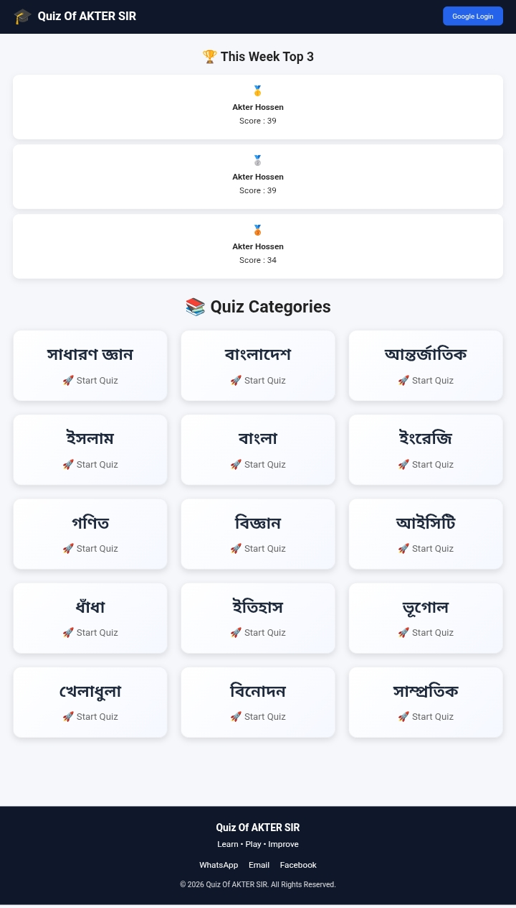
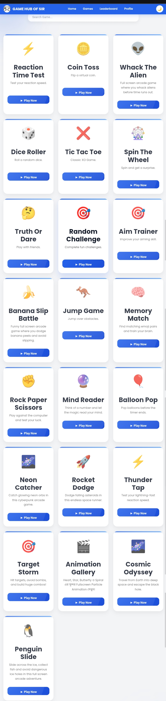

BSS —
Bangladesh Open University
Bachelor of Social ScienceHELLO, I'M
I teach, create and build digital solutions with a focus on education, artificial intelligence and technology.

GET TO KNOW ME
I am Akter Hossen, an educator and aspiring web developer from Cox's Bazar, Bangladesh.
I am pursuing a BSS degree through Bangladesh Open University while working as an Assistant Teacher at Al-Haramain Model Madrasa.
Alongside teaching, I enjoy building websites, exploring artificial intelligence and creating digital tools that make education and everyday work smarter.
MY ACADEMIC JOURNEY
Bangladesh Open University
Bachelor of Social ScienceCox's Bazar DC College
Science Group
MY PROFESSIONAL JOURNEY
Teaching students, preparing educational materials, supporting examination activities and participating in institutional development.
🏆 Teacher of the YearManaged daily operations, customer communication, administration and business-related tasks.
🏆 Employee of the YearMY EXPERTISE
HTML · CSS · JavaScript · Firebase · GitHub
Word · Excel · PowerPoint · Google Workspace
Teaching · Lesson Planning · Digital Learning
AI Tools · Prompt Engineering · Workflow Design
Graphic Design · Presentation Design · Visual Communication
Communication · Teamwork · Leadership · Management
MY WORK

View live ↗A digital campus platform for institutional information, notices, student services and educational resources.
HTML · CSS · JavaScript · Firebase
View live ↗A productivity dashboard for tasks and AI-powered digital workflows.
HTML · CSS · JavaScript · Firebase
View live ↗An interactive quiz platform designed to make student practice engaging.
HTML · CSS · JavaScript
View live ↗A browser-based collection of interactive games and activities for students.
HTML · CSS · JavaScriptMY JOURNEY
Recognition for dedication and contribution to teaching at Al-Haramain Model Madrasa.
2024 · Professional recognitionRecognition for professional performance and responsibility.
Abrar Feed and Medicine CenterCompleted training in Judo, Karate, Taekwondo and Shooting through BKSP Ramu.
TrainingCurrently pursuing Bachelor of Social Science under Bangladesh Open University.
Expected 2026GET IN TOUCH
Have a project, collaboration idea or educational initiative? Feel free to reach out.
Open to digital projects, educational technology, collaboration and meaningful opportunities.
Send me an email ↗Chat on WhatsApp ↗